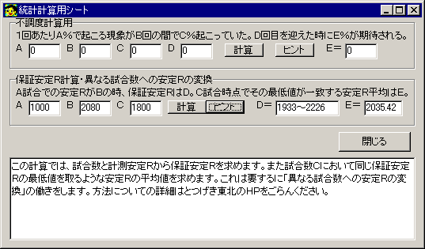

ｼｽﾃﾏﾃｨｯｸ麻雀研究室、Calc電卓の使用法、３麻集計機能の使用法、その他の追加情報です。
・各種状況別順位分布研究
麻雀の、試合全体に関する「状況」が、試合結果にどのような影響を与えるかを研究できます。
ここで研究可能な「状況」は非常に詳細であり、この機能だけで「状況判断」と呼ばれる、麻雀に関する大局的な（１打１打ではなく試合全体の）データのほとんど全てを数値化することが可能になっています。例えば、とつげき東北が普段打つときに意識できている「状況」よりも遥かに細かい状況別に、研究を行うことができます。

真ん中上のボックスに指定した局の０本場に起こった現象別に、最終順位の分布と、その場合の成績の変化を出力します。
「点数の条件」に、集計対象にすべき点数や点数の変化の範囲を入力します。
「局の終了方法」に、集計対象にすべきその局の終了方法を指定します。
「その他状況条件」に、その他の状況での集計条件を付けます。
また「限定条件」として、さらに集計対象の範囲に制限をかけることができます。
以上のようにして指定した全ての条件を満足する局を含む局だけを集計し、その場合の順位分布を調べます。
「研究ボタン」を押すことで集計します。
例えば、全ての条件を指定しないで「研究」を行うと、通常の集計と全く同じ集計結果になります。
「点数の条件」で「終了時持ち点」を指定し、「東３局」にして集計すると、東３局０本場が終了した瞬間の集計者の持ち点が、真ん中で-1000〜1000のように示された範囲にあった試合だけが集計されます。
「東１局」に「自分が他家からロン」し、その点数が3900〜5200点だった場合、最終順位はどうなるか？ など、複雑な状況別の最終順位分布を研究できます。
なお、「その他状況」における「自分は〜位」は、その局を迎えた瞬間の集計者の順位です。東１局０本場の場合、４人全員が同じ点数ですので「１位」ということになります。同様に、得点が並んでいる場合、それが何人であっても、最も高い順位が選ばれます。
注意：
ここで指定する条件は全て、排他的です。ある条件によって「集計対象外」と判断されると、集計ルーチンは即、他のいかなる条件とも独立に、当該試合を「無効」と見なします。また、ある条件の中で他の条件が必然的に前提となるような場合、前提であるような条件は必ず明示的に指定する必要があります（例えば、「放銃者の順位を限定」した場合に、放銃者がいないような試合が含まれてしまうと、集計結果が保証されなくなります）。
「４人分研究ボタン」を押すと、当該期間内の試合で、集計者のＨＮとは独立に、４人分のデータを全て集計することができます。例えば、ある試合でＡさん、Ｂさん、Ｃさん、Ｄさんが打ったとします。集計ＨＮをＡさんにして「集計」したり、「研究」したりする場合、通常はＡさんだけが集計対象者となりますが、４人分研究によって、Ａさんで集計した結果と、Ｂさん、Ｃさん、Ｄさんで集計した結果の全てを合算して結果を出力できます。この機能を用いる場合に、各条件で指定する「自分の親子」などの表現における「自分」は、常に、「その時集計ルーチンが<自分>と見なしているキャラ」を示します。したがって、Ａさん、Ｂさん、Ｃさん、Ｄさんがそれぞれ１度ずつ「自分」になる機会を得ます。
なお、４人全員の集計をした場合に、局あたり全収支がピッタリ０にならないことがありますが、これは計算の有効数字上の誤差で、バグではありません。また、各順位の回数が正確に一致しないことがありますが、これは同着の場合のカウントによってずれるためで、バグではありません。

・スタックつき電卓
スタックつき電卓の基本的な使用法は通常の電卓と全く同じです。
使い方のヒントは、「Helpボタン」で確認してください。
スタックつき電卓の特徴は、スタックに、計算結果をためて（push）、それを取り出して（pop）使うことができる点にあります。
また、スタックに溜められたデータの合計や平均を、「Sumボタン」や「Avr.ボタン」で簡単に求めることができます。
電卓の各ボタンで、大文字になっている文字を押すと、そのボタンをクリックしたのと同様の結果が得られます（一部除く）。
例えばキーボードからＰキーを押すと「Pushボタン」を押すことと同じことになります。
12 × 5 Ｐ 10 × 4 Ｐ Ｓ とキーボードを順に押すと、12×5＝60がスタックにpushされ、10×4＝40がスタックにpushされ、「Sumボタン」がスタックの合計を求めるので、結果は「100」になります。
なお、「Numボタン」は、スタックにつまれたデータの個数を返します。
・統計計算用シート
統計計算用シートの使い方については、「ヒントボタン」を押してヒントをご覧下さい。
以下、実際の計算式（０除算回避等の部分は除く）を書いておきます。
「不調度計算用」
Ｅ=(((Ｄ-Ｂ)*Ａ)+(Ｂ*Ｃ))/(Ｄ)
Ａ、Ｃは必ずしも単位％である必要はありません。
「保証安定Ｒ計算・異なる試合数への安定Ｒの変換」
論文参照。
「条件」のウインドウを開くと、右下に「３麻集計」のチェックがあります。これにチェックすると、３麻が集計対象になります（これにチェックを入れない場合、３麻は集計対象になりません）。
・現在の機能制限、その他
３麻は、ワイ卓として取り扱われます。３麻の中の「Rate1850卓」だけのデータが見たいような場合、「条件」の「試合情報に次の文字列を含むものだけ」をチェックし、「東風戦」となっている部分に「Rate1850」と入れて集計します。
３麻集計で見ることができるデータは、「安定Ｒ」および「局毎の集計結果」および「詳細データ」です。
ただし３麻集計では、「和了素点」「放銃素点」のデータが正確になりません（ツモ上がりの得点の違いによります）。
同様の原因で、牌譜を出力していないデータについては、和了者の親子判定等での狂いが生ずる可能性があります。
「状況判断技術」を見ることはできません。
「ｼｽﾃﾏﾃｨｯｸ麻雀研究室」の研究機能を用いることはできません。
・お願い
とつげき東北自身が３麻で全く打たないので、３麻集計のバグ等を発見できない環境にあります。
バグ報告をいただけないと、対処のしようがないです。ご協力をお願いします。
ただ、とつげき東北は３麻の集計機能を増やすことにそれほど魅力を感じないことも事実です（^-^；）
いただいたバグ報告に必ずしも対処できるとは限りませんので、あらかじめご了承ください。